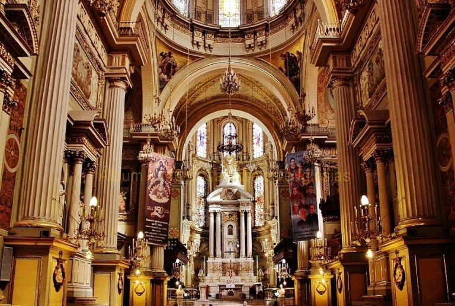
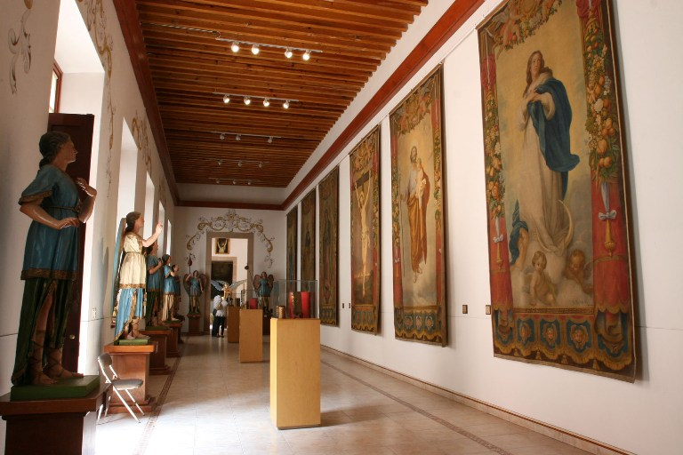

LEON
-
Basílica Catedral de la Madre Santísima de la Luz
- Una verdadera joya arquitectónica que no puedes dejar pasar en tu visita a León, Guanajuato. El edificio tiene 67 metros de altura en sus dos torres idénticas, con un estilo barroco en su fachada, una ambientación de aspecto neoclásico en su interior, con hermosas capillas eclécticas, siendo ejemplares las de San José, con un estilo mudéjar o la de Cristo Rey, que tiene características art decó. Cuando estés dentro no olvides mirar hacia el techo de la basílica y observar sus hermosos detalles y sus fascinantes arcos.
- Imagen de la Basílica Catedral de la Madre Santísima de la Luz:

-
Museo de Arte Sacro
-
Un interesante museo ubicado en uno de los anexos de la Catedral Basílica, en el cual podrás rememorar momentos históricos importantes en torno a la religión católica, con gran cantidad de pinturas de varias épocas, de numerosos autores, y también objetos litúrgicos de alto valor espiritual, todos pertenecientes a la Arquidiócesis de León. Te recomendamos reservar una visita guiada, ya que así podrás enterarte sobre el significado de las pinturas, de las esculturas y de todos los objetos de la colección del museo.
- Imagen de el museode arte Sacro:
